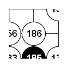
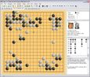
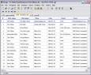
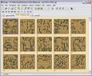
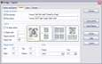
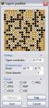
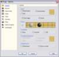

Drago
Drago

Ressources

Exemples d'impression et d'exportation
Dernière version
La version actuellement téléchargeable est la 4.33. Téléchargez ou consultez l'historique pour la description des dernières modifications.
Présentation
Drago est un logiciel Windows, freeware et open source, dédié au jeu de Go. Il permet de :
- visualiser et éditer des fichiers de parties ou de problèmes de Go,
- de les imprimer ou de les exporter,
- créer des bases de données de parties et chercher des parties contenant une position, ou chercher par noms de joueurs, date, résultat, etc.,
- rejouer des parties de Go,
- résoudre des problèmes de Go,
- jouer contre des moteurs de jeu.
Et aussi :
- Unicode
- Interface à onglets
- Exportation des parties en RTF, PDF, HTML et Word
- Exportation des figures en WMF, BMP, JPEG, GIF, PNG et ASCII
- Installation standard, désinstallation complète
- Conformité SGF
- Lit les fichiers multi-jeux et les répertoires de parties
- Installé avec une base de parties (en formats SGF et base de données) et quatre bases de problèmes en format SGF
- ... et plus.
Installation
Il suffit de :
- Télécharger la dernière version
- Dézipper et lancer le programme d'installation
Pour jouer contre un moteur de jeu (GNU Go, Go169, MoGo, etc.), il faut le télécharger et le déclarer dans l'onglet Moteur de jeu de la fenêtre d'options. Les moteurs de jeu courants sont prédéfinis et il n'est pas nécessaire de spécifier la ligne de commande. Ceci est décrit ici.
libkombilo
Drago est interfacé et installé avec la librairie libkombilo. Cette librairie open source est développée par Ulrich Goertz. Elle permet d'exploiter toutes les fonctions de son application de bases de données Kombilo.
Liens
Seuls quelques liens généraux ou offrant des ressources bien adaptées à Drago sont listés ici.
Ressources
La page des ressources propose :
- une collection d'images de textures de bois (disponible également dans l'installation)
- un script Perl de conversion des fichiers goproblems.com en collections SGF
- une collection de problèmes sur des gobans 4x4 extraits de goproblems avec le script cité ci-dessus
Cliquez sur les légendes pour voir les aperçus

Fenêtre principale

Vue des informations de jeu

Vue des vignettes

Paramétrage de la mise en page d'impression

Exportation d'une position

Options